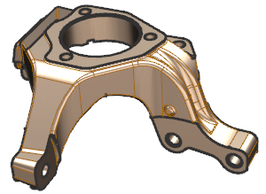

Change smooth edge display
-
Choose Preferences→Visualization.
-
Click the Visual tab.
-
Expand Edge Display Settings.
-
In the Smooth Edges group, on the Color line, clear the Original
 check box, and click the color swatch .
check box, and click the color swatch .
-
In the Color dialog box, select color number 189 Strong Brown, and click OK.
-
On the Width line, from the Width list, select 0.13 mm.
-
Click OK.
